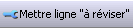
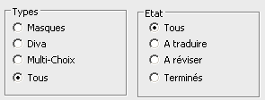

Un libellé peut avoir trois états :
A traduire
A réviser
Terminé
Lorsqu'une traduction est saisie, l'état passe automatiquement à "Terminé".
Le bouton

permet de changer l'état de la ligne courante ou des lignes sélectionnées.
Les groupes de radio-boutons "Types" et "Etat" permettent de filtrer les lignes affichées dans le tableau.

Les libellés à traduire sont répartis en trois catégories :
les libellés provenant des masques (textes, bulles, en-tête de colonnes, etc.)
les libellés Diva (fonction Translate, libellés provenant de fichiers tels que les menus ou les messages d'erreur)
les libellés provenant des dictionnaires de multi-choix.
Remarque
Le bouton  permet de filtrer les libellés en fonction de leur provenance (nom du fichier d'origine).
permet de filtrer les libellés en fonction de leur provenance (nom du fichier d'origine).